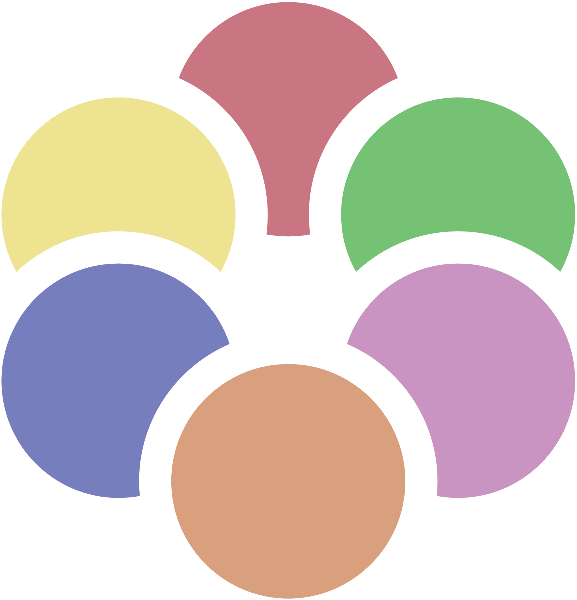

|
|
Kingdom Hearts Archipelago RandomizerLocations Guide |
 |
| Setup Guide | Generate a Seed | Locations Guide | Discord | Credits |
World Map
With "Keyblades Unlock Chests" enabled, every world must have their related keyblade to open any chest within. Events and rewards are not effected.
Requirements of lower logical difficulties apply to higher logical difficulties, e.g. if Beginner can reach a location with High Jump, so can Normal, Proud, and Minimal.
| World | Keyblade | Notes |
|---|---|---|
 |
 Lionheart |
Progression goes like so:
Talk to Cid, then defeat 5 heartless OR see every Donald and Goofy scene and visit the 3rd District, go to the accessory shop and leave, fight Leon, then travel to the 3rd District to fight Guard Armor. You can then speak with Leon twice in the Secret Waterway, and use Fire to access the Mystical House. TT has the mailbox for Postcards, Pongo and Perdita for returning Puppies, and the Item Workshop for Synthesis. |
 |
 Spell Binder |
The "100 Acre Wood" option must be enabled for the world to be in logic.
Requires the FIRE spell to access the book in the Mystical House. Requires speaking with Leon in the Secret Waterway twice for the book to appear. "Torn Pages" are the progression items, unlocking one room and mini-game at a time. |
 |
 Oathkeeper |
Only available if the "Destiny Islands" option is enabled.
"Raft Materials" are the progression items. An amount dictated by the settings are required to access Day 2, and to access Homecoming. Accessing Homecoming is an alternative method to beating the game, bypassing the Final Rest Door. |
 |
 Lady Luck |
"Footprints" are the progression item, it acts as the evidence for Alice's trial and will trigger the tower fight and grants access to the different versions of the Bizarre Room. |
 |
 Olympia |
The "Entry Pass" is necessary to fight Cerberus and access the tournaments.
The tournaments may be locations depending on what the "Cups" option is set to. "No Hades Cup" adds the Phil Cup, Pegasus Cup, and Hercules Cup. "All Cups" adds the Hades Cup, and the Ice Titan if "Superbosses" are enabled. If "Superbosses" are enabled, Sephiroth will be in logic, even if "Cups" is set to "Off". |
 |
 Jungle King |
"Slides" are the progression item, it combines Slides 1-6 normally needed to be collected around camp to continue the story.
The Jungle Slider mini-game is only in logic if the "Jungle Slider" setting is enabled. |
 |
 Three Wishes |
Kurt Zisa is available after defeating Riku-Ansem if "Superbosses" are enabled. |
 |
 Wishing Star |
"High Jump" or "Glide" are necessary to complete Monstro. Completing Monstro will cause Geppetto's House to appear in Traverse Town. |
 |
 Pumpkin Head |
The "Forget-me-not" and "Jack-in-the-box" are both progression items. The Forget-me-not is used first, and then the Jack-in-the-box.
If "Halloween Town Key Item Bundle" is enabled, both items are given with "Forget-me-not". |
 |
 Crabclaw |
The "Atlantica" option must be enabled for the world to be in logic.
Keyblade locking does not work in Atlantica. Crabclaw is not necessary to open any chest, but it would be if keyblade locking was ever made to work. "Crystal Trident" and "Mermaid Kick" are both progression items. |
 |
 Fairy Harp |
Neverland is progression gated by Green Trinity.
Phantom is available after defeating Riku-Ansem and collecting every location in the Clock Tower if "Superbosses" are enabled. |
 |
 Divine Rose |
"Emblem Pieces" are the progression item, which grants access to higher levels of Hollow Bastion.
"Theon Vol. 6" is the progression item, though progress is actually dictated by the Emblem Pieces. If Emblem Pieces are not shuffled, Theon Vol. 6 and/or anything else necessary to collect the Emblem Pieces may be required. Unknown is available after completing Hollow Bastion if "Superbosses" are enabled or "Final Rest Door Key" is set to "Unknown". Hollow Bastion will not appear on the world map until Leon is talked to in the Secret Waterway. Hollow Bastion will become unavailable after defeating Riku-Ansem until Cid is interacted with in the First District and the scene with Kairi in the Secret Waterway occurs. Hollow Bastion must be entered from the Rising Falls on the second visit. |
 |
 Oblivion |
May require Lucky Emblems or an "End of the World" item to become accessible.
The Final Rest door, which grants access to the final boss, will only appear depending on settings. The door acts as the victory condition. The Final Rest door can be circumvented by Destiny Islands, if that is enabled. |